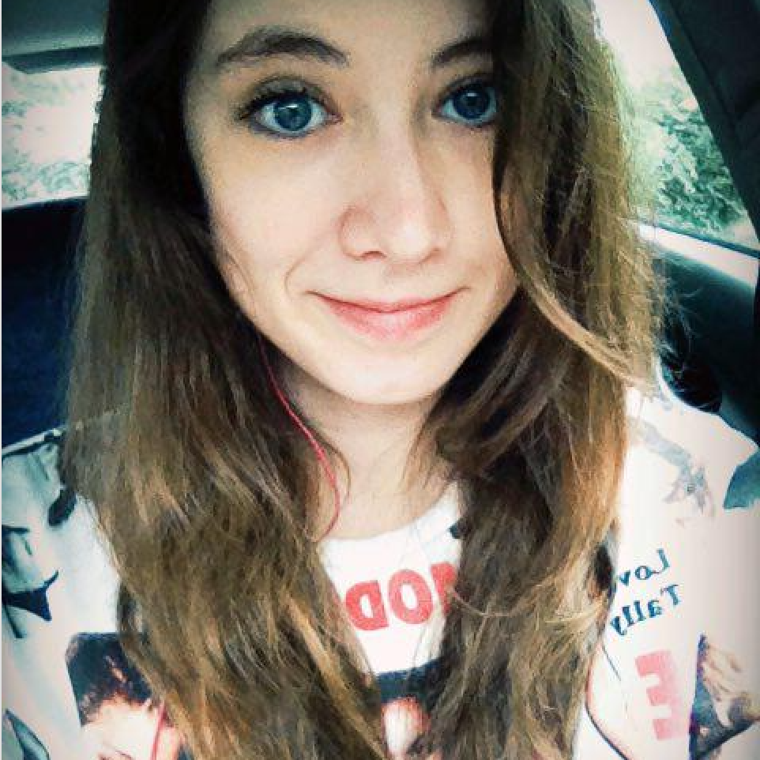

| Firstname | Lastname | |
|---|---|---|
| Blanca | de la Torre Fuertes | bldelato@ucm.es |
| Marta | Pastor Puente | mapast03@ucm.es |
| Guillermo | Monserrate | gmonserr@ucm.es |
| Pablo | García de los Salmones Valencia | pablga05@ucm.es |
| Iván | Gulyk | igulyk@ucm.es |
Blanca de la Torre Fuertes
bldelato@ucm.es
Soy una estudiante de Ingeniería Informática de la UCM, y mis inquietudes van desde cosas relajantes como leer, ir al cine o la música (tanto escucharla como tocar el piano), hasta actividades como ir a la montaña. Disfruto la mayor parte del tiempo libre saliendo con amigos o a pasear.
Marta Pastor Puente
mapast03@ucm.es
Estudiante de Ingeniería Informática, Diseño y Creación Digitales. Apasionada del teatro, del tiro con arco y de los idiomas. Mis intereses profesionales se centran en los ámbitos del desarrollo web, diseño gráfico y ciberseguridad. En mi tiempo libre me gusta practicar vela ligera y leer poesía.
Guillermo Monserrate
gmonserr@ucm.es
Actualmente soy un estudiante del grado de Ingeniería Informática de la UCM. Soy un gran amante de las nuevas tecnologías, y también disfruto escribiendo. Lo que más me gusta es poder ver cómo avanzo en cuanto a mi aprendizaje, estando cada vez más cerca de cumplir mis proyectos.
Pablo García de los Salmones Valencia
pablga05@ucm.es
Potencial Ingeniero Informático con curiosidad por el conocimiento. Amante de la programación, la seguridad informática y del software libre. En mis ratos libres leo, patino e investigo sobre temas de mi interés.
Iván Gulyk
igulyk@ucm.es
Estudiante de Ingeniería Informática en la UCM. Me encatnta ver series y también soy muy fan de Naruto. En mis ratos libres suelo salir con mis amigos a pasear o jugar al baloncesto.